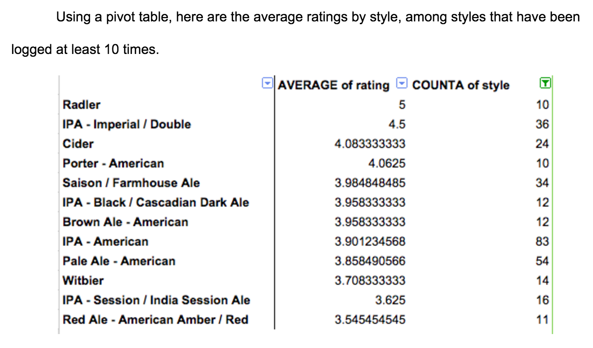

H0 = There is no relation between a beer’s state of origin and its rating.
HA = A beer’s state of origin and the rating I gave it are related.
P-value = 0.001738
lower than 0.05 means there is a relationship!
relationship between style and rating
H0 = There is no relation between the style of a beer and its rating.
HA = I give higher ratings to certain styles of beer than others.
P-value = 1.958e-13
way lower than 0.05 means there is a relationship!

Conclusion
The rating I assign a beer in Untappd has some relationship with both its style and its state of origin, as well as a slight relationship with its ABV content.